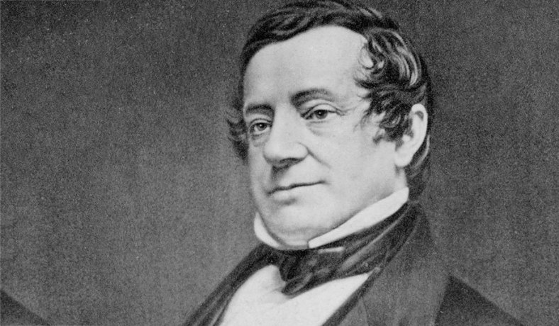
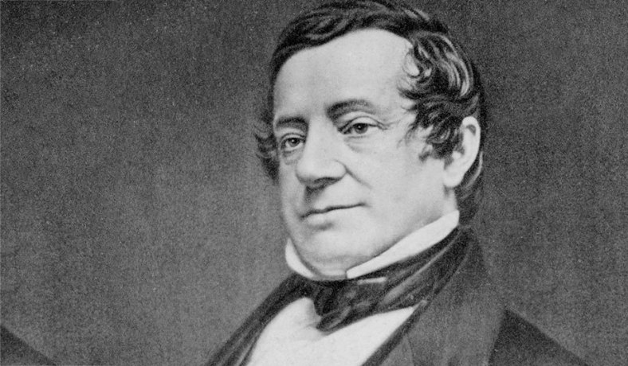
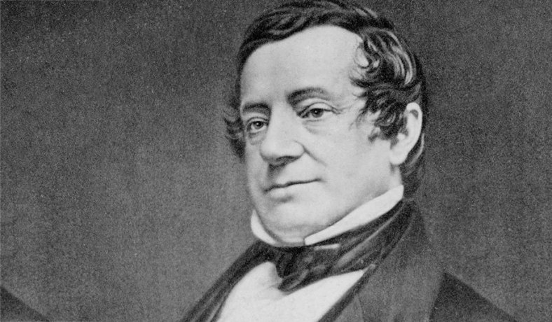

Livro do mês rip van winkle
 


Rip van Winkle é o nome de um conto sobre uma personagem homônima, escrito por Washington Irving e publicado em 1819, baseado em contos germânicos que Irving conheceu, ouviu e aprendeu durante um período que passou na Europa. De acordo com Charles M. Skinner, no livro Myths and Legends of our Own Land, é a mais conhecida das lendas americanas.
O conto foi escrito durante um período de Irving na Inglaterra e relata os tempos antes e após a revolução norte-americana. Conta que um homem, fugindo à sua esposa má, corre para uma floresta. Depois de muitas aventuras, põe-se a descansar sob uma árvore umbrosa e adormece.
Vinte anos depois, ele acorda e decide regressar à sua aldeia. Ele mete-se logo em dificuldades quando ovaciona George III, não sabendo, no entanto, que se tinha realizado a revolução e que já não se devia saudar a monarquia.
História
Um fazendeiro chamado Rip Van Winkle tinha um cachorro chamado Lobo, não gostava de trabalhar e vivia no bar. Um dia, para não ouvir as reclamações da sua esposa resolveu ir às montanhas, passou lá o dia todo com seu cachorro. Quando pensava em voltar, ele viu um anão subindo a montanha carregando um barril. Rip ofereceu ajuda ao homem e subiu com o barril nas costas, até um local onde havia vários outros homens jogando, até que um homem de barbas brancas fez Rip dormir.
Após acordar, Rip procura sua arma, mas esta estava tão enferrujada que se desfez. Desceu a montanha de volta à cidade. Ele vai até sua casa e a encontra toda destruída, depois ele vai até o bar, procura os amigos, porém descobre que houve uma guerra e que muitos morreram. Ao perguntar sobre si mesmo, é apresentado a um jovem, muito semelhante a ele mesmo, que é o jovem Rip, filho de Rip van Winkle, que nunca havia voltado das montanhas, vinte anos atrás. Ele volta, então, para a casa de sua filha e não trabalha mais, por ser muito velho. Passou 20 anos dormindo e agora brinca com as crianças e conta sua história para os turistas.
Legado
O termo "Rip Van Winkle" acabou se tornando sinônimo de uma pessoa que vive situação de mudança social, seja ela intencional ou não, mas que "congela no tempo". O personagem de Washington Irving acabou se tornando um marco daquilo que estagnou, que dormiu e acordou em dois períodos distintos, mas ainda permanece o mesmo. No caso, Rip confronta a mudança da Revolução Americana, dormindo numa colônia inglesa e acordando numa América independente. Quando ele retorna para o vilarejo, nota que uma série de coisas estão diferentes, mesmo o boteco onde ele costumava passar boa parte do tempo havia mudado muito.
Home